复数和相变 | Complex Numbers, The Phasor Transform
虚数单位：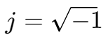
复数表示：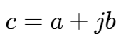
在这里，a 是复数的实部（real part），b 是复数的虚部（imaginary part）。
实部和虚部的表示：
实部：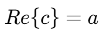
虚部：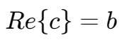
共轭复数,,:
对于一个复数 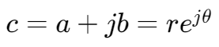，其共轭复数 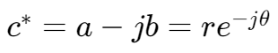。
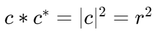
欧拉复数表示法
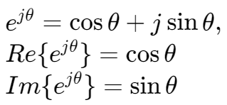
极坐标复数表示法
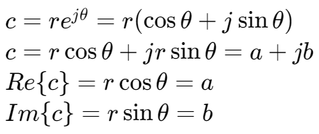
一些形式转换：
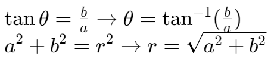
另一种极坐标表示法：
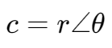
这里的  使用角度值表示。
使用角度值表示。
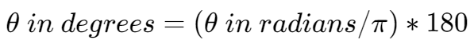
复数的四则运算 | Arithmetic Operations
加减
将实部与实部相加，虚部和虚部相加。
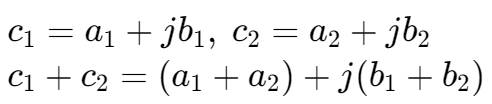
乘除
对于笛卡尔形式：
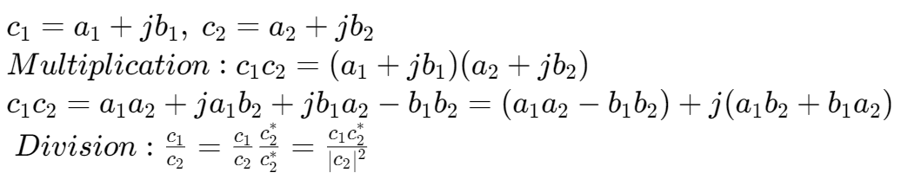
对于极坐标形式：
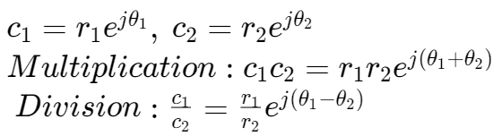
对于极坐标的另一种写法：
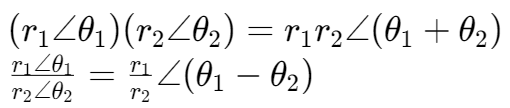
相的转换 | The Phasor Transform
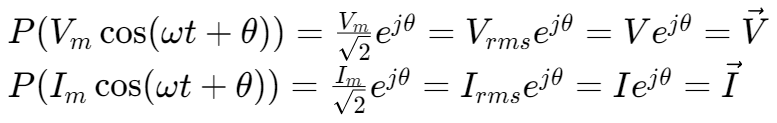
这里的函数 P 是定义相的转换的函数，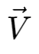 和 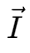 即电压、电流的相表示。
在这之后，都使用 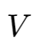 表示 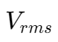，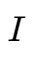 表示 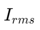。
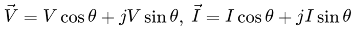
相转换的逆运算 | The inverse Phasor Transform
使用给定的频率 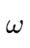，
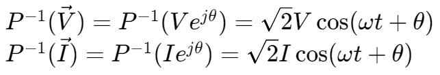
相量与基尔霍夫
KVL: 回路中电压的代数和为零
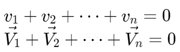
KCL: 对于一个节点，离开其的电流和为零
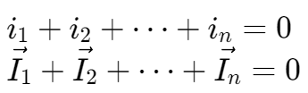
对于电阻的 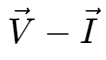 关系：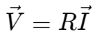